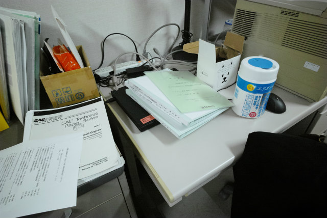
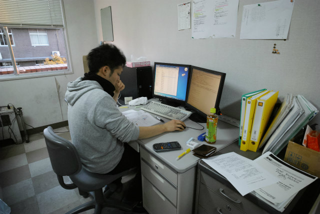
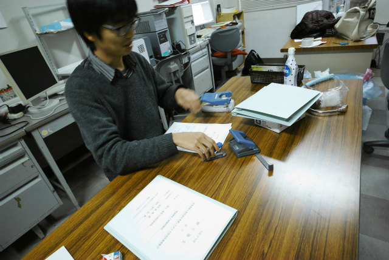
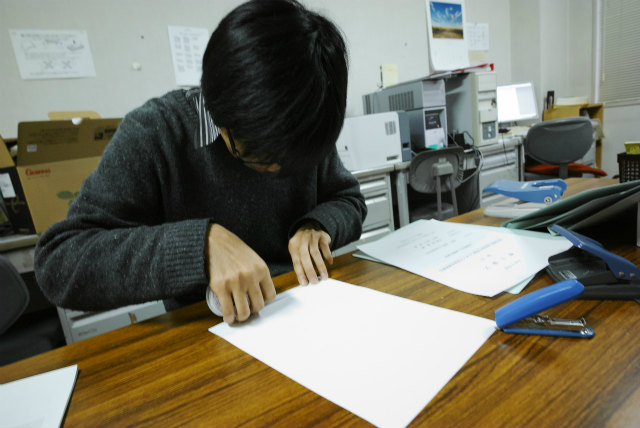
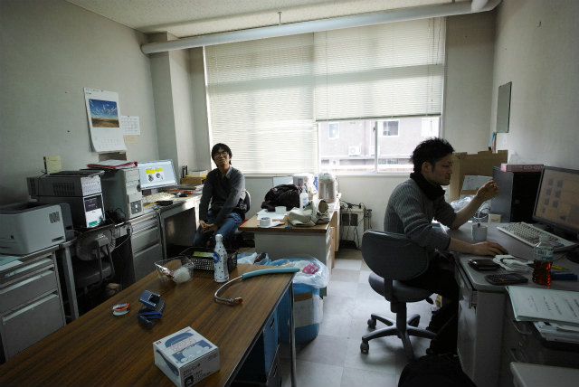
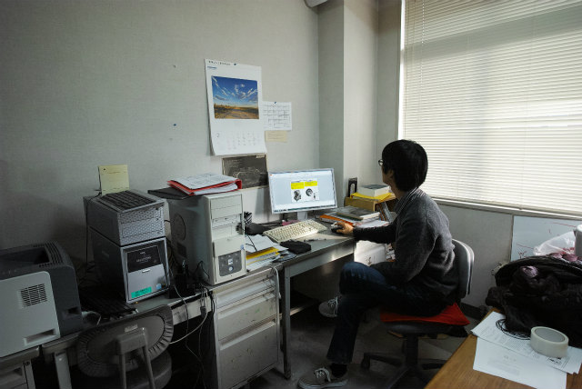
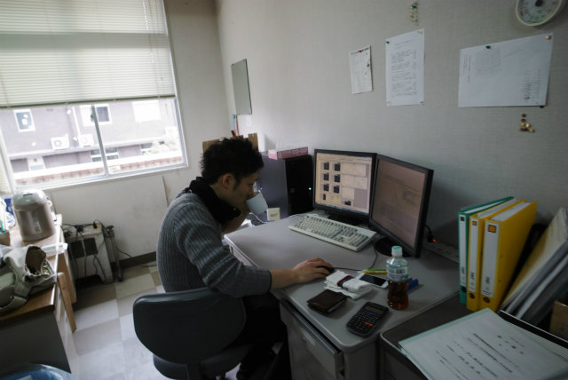
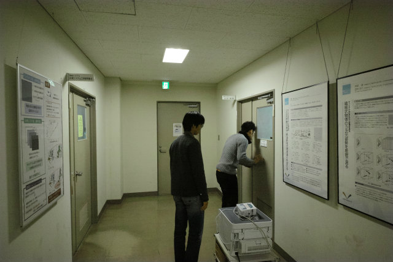

| ・ 修士論文提出 (H28.02.13) | |||
去年はいろいろありましたが，今年はとくに何も無い年でした．1週間前に二人とも原稿は表紙から付録まで一通り完成していました．学部，修士とA井くんもShogoも論文とか国内外の学会発表で実績を積んできたので，去年の11月末にはだいたい結果が出揃っている状態．そこから1月末までじっくり修論執筆できました．HP的には面白い絵が無いのですが，これからもこうありたいものです． |
|||
|

前日に3部完成済み |

細かい校正 | ||
|

ゆっくり冊子作成 |

前日にまったり作成 | ||
|

明けて当日，気付けば提出済みな二人 |

プレゼンも今までの合体ですし | ||
|

来月の旅行前に出せるように引継ぎ作ります |

打合せ終わりの村田先生へ提出完了報告 | ||